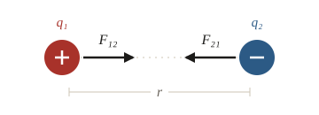
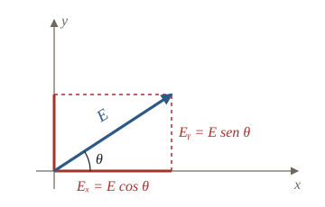
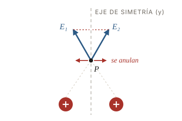
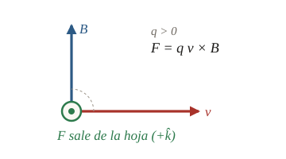

¿Qué es un vector?
Un vector se representa con una flecha y se caracteriza por su módulo (cuánto vale), su dirección (la recta sobre la que actúa) y su sentido (hacia qué lado apunta). Una magnitud escalar, en cambio, es solo un número con unidad.
F = k q₁q₂ / r²Atrae o repele según los signos de las cargas.E = F / qSale de las cargas positivas y entra en las negativas.F = q v × BLa fuerza es perpendicular a v y a B.
Componentes cartesianas y polares
En el plano xy un vector se escribe con sus componentes, E = Eₓ î + Eᵧ ĵ, o con coordenadas polares: módulo y ángulo θ, medido desde +x en sentido antihorario.
E = √(Eₓ² + Eᵧ²)θ = arctan(Eᵧ / Eₓ)

Una fuerza de 10 N a 30° tiene Fₓ = 10 cos 30° = 8,66 N y Fᵧ = 10 sen 30° = 5,00 N.
Suma y resta de vectores
La suma se hace componente a componente: Rₓ = Aₓ + Bₓ y Rᵧ = Aᵧ + Bᵧ. Restar es sumar el opuesto: A − B = (Aₓ − Bₓ, Aᵧ − Bᵧ). Después se calculan el módulo y el ángulo con las fórmulas del capítulo anterior.
Dos fuerzas de Coulomb F₁ = (3, 1) N y F₂ = (1, 2) N dan R = (4, 3) N, |R| = 5 N y θ = 36,9°.
Simetría respecto de un eje
Si dos cargas iguales están ubicadas simétricamente respecto de un eje, los campos que crean sobre ese eje son simétricos: las componentes perpendiculares al eje se cancelan y las paralelas se suman. Con cada campo a un ángulo θ del eje x, sobre el eje y queda:

Producto escalar
El producto escalar de dos vectores da un número que mide cuánto de uno está alineado con el otro.
Es cero si son perpendiculares, máximo si son paralelos y negativo si son opuestos. En Física III aparece en el trabajo de una fuerza, W = F · Δr, y en el flujo del campo eléctrico, Φ = E · A.
En polares, A = (5, 30°) y B = (4, 90°) dan A · B = 5 · 4 · cos(−60°) = 10.
Producto vectorial
El producto vectorial da otro vector, perpendicular al plano de A y B, de módulo |A||B| sen θ y sentido dado por la regla de la mano derecha (de A hacia B). Si se invierte el orden, cambia el sentido: A × B = −(B × A).
Una componente positiva significa +k̂ (sale de la hoja) y una negativa, −k̂ (entra). Es la base de la fuerza magnética F = q v × B: el signo de q también invierte el sentido.

A = (5, 30°) y B = (4, 90°) dan A × B = 5 · 4 · sen 60° k̂ ≈ 17,32 k̂.